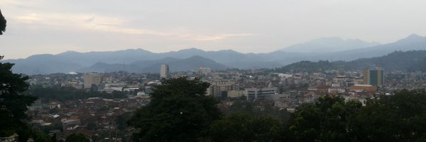

Sejarah

Kota Bandar Lampung merupakan Ibu Kota Provinsi Lampung sekarang, sebelumnya Kota Bandar Lampung secara historis bernama Tanjung Karang - Teluk Betung kota ini bagian dari wilayah Way Handak Kabupaten Lampung Selatan, pada sekitar tahun 1982 terjadi perluasan, sehingga Kota Tanjung Karang - Teluk Betung dijadikan satu yaitu Kota Bandar Lampung, yakni Ibu Kota dari pada Provinsi Lampung disebut Lampung yang artinya Sang Bumi Lampung.
Sistem nilai dan kultur Lampung menjadi satu ialah Pepadun masyarakat Lampung hanya memiliki satu budaya yaitu Penyimbang, namun ada dua tradisi yang mengkristal dan hidup dengan nilai yang kental demokratis Saibatin cenderung Aristokratis, Suku Lampung diyakini sebagai penyebab penggunaan bahasa Lampung, terutama di daerah perkotaan Kota Bandar Lampung, suku-suku Lampung ini secara geografis menempati wilayah mulai dari Kepaksian Paksi Pak Sekala Brak di Kabupaten Lampung Barat, Liwa. Kabupaten Pesisir Barat, Kabupaten Tanggamus, Kabupaten Pesawaran, Kabupaten Lampung Selatan, Kota Bandar Lampung, Kabupaten Lampung Timur hingga ke bagian wilayah Provinsi Sumatera Selatan dan Provinsi Bengkulu, bahkan terdapat juga di pantai barat provinsi Banten.
Masa Pendudukan Belanda (1912-1942)
Wilayah Kota Bandar Lampung pada zaman kolonial Hindia Belanda termasuk wilayah Onder Afdeling Telokbetong yang dibentuk berdasarkan Staatsblad 1912 Nomor: 462 yang terdiri dari Ibu kota Telokbetong sendiri dan daerah-daerah di sekitarnya. Sebelum tahun 1912, Ibu kota Telokbetong ini meliputi juga Tanjungkarang yang terletak sekitar 5 km di sebelah utara Kota Telokbetong (Encyclopedie Van Nederland Indie, D.C.STIBBE bagian IV).
Ibu kota Onder Afdeling Telokbetong adalah Tanjungkarang, sementara Kota Telokbetong sendiri berkedudukan sebagai Ibu kota Keresidenan Lampung. Kedua kota tersebut tidak termasuk ke dalam Marga Verband, melainkan berdiri sendiri dan dikepalai oleh seorang Asisten Demang yang tunduk kepada Hoof Van Plaatsleyk Bestuur selaku Kepala Onder Afdeling Telokbetong.
Masa Pendudukan Jepang (1942-1945)
Pada zaman pendudukan Jepang, kota Tanjungkarang-Telokbetong dijadikan shi (Kota) di bawah pimpinan seorang shichō (bangsa Jepang) dan dibantu oleh seorang fukushichō (bangsa Indonesia).
Masa Kemerdekaan Indonesia
Sejak zaman Kemerdekaan Republik Indonesia, Kota Tanjungkarang dan Kota Telokbetong menjadi bagian dari Kabupaten Lampung Selatan hingga diterbitkannya Undang-Undang Nomor 22 tahun 1948 yang memisahkan kedua kota tersebut dari Kabupaten Lampung Selatan dan mulai diperkenalkan dengan istilah penyebutan Kota Tanjungkarang-Telukbetung.
Secara geografis, Telukbetung berada di selatan Tanjungkarang, karena itu di markah jalan, Telukbetung yang dijadikan patokan batas jarak ibu kota provinsi. Telukbetung, Tanjungkarang dan Panjang (serta Kedaton) merupakan wilayah tahun 1984 digabung dalam satu kesatuan Kota Bandar Lampung, mengingat ketiganya sudah tidak ada batas pemisahan yang jelas.
Pada perkembangannya selanjutnya, status Kota Tanjungkarang dan Kota Teluk Betung terus berubah dan mengalami beberapa kali perluasan hingga pada tahun 1965 setelah Keresidenan Lampung dinaikkan statusnya menjadi Provinsi Lampung (berdasarkan Undang-Undang Nomor: 18 tahun 1965), Kota Tanjungkarang-Telukbetung berubah menjadi Kotamadya Daerah Tingkat II Tanjungkarang-Telukbetung dan sekaligus menjadi ibu kota Provinsi Lampung.
Berdasarkan Peraturan Pemerintah Nomor 24 tahun 1983, Kotamadya Daerah Tingkat II Tanjungkarang-Telukbetung berubah menjadi Kotamadya Daerah Tingkat II Bandar Lampung (Lembaran Negara tahun 1983 Nomor 30, Tambahan Lembaran Negara Nomor 3254). Kemudian berdasarkan Keputusan Menteri Dalam Negeri Nomor 43 tahun 1998 tentang perubahan tata naskah dinas di lingkungan Pemerintah Kabupaten/Kotamadya Daerah Tingkat II se-Indonesia yang kemudian ditindaklanjuti dengan Keputusan Wali kota Bandar Lampung nomor 17 tahun 1999 terjadi perubahan penyebutan nama dari “Pemerintah Kotamadya Daerah Tingkat II Bandar Lampung” menjadi “Pemerintah Kota Bandar Lampung” dan tetap dipergunakan hingga saat ini.
Geografis

Topografi Kota Bandar Lampung sangat beragam, mulai dari dataran pantai sampai kawasan perbukitan hingga bergunung, dengan ketinggian permukaan antara 0 sampai 500 m daerah dengan topografi perbukitan hingga bergunung membentang dari arah Barat ke Timur dengan puncak tertinggi pada Gunung Betung sebelah Barat dan Gunung Dibalau serta perbukitan Batu Serampok disebelah Timur.
Wilayah pantai terdapat di sekitar Teluk Betung dan Panjang dan pulau di bagian Selatan. Wilayah landai/dataran terdapat di sekitar Kedaton dan Sukarame di bagian Utara. Wilayah perbukitan terdapat di sekitar Teluk Betung bagian Utara. Wilayah dataran tinggi dan sedikit bergunung terdapat di sekitar Tanjung Karang bagian Barat yaitu wilayah Gunung Betung, Sukadana Ham, dan Gunung Dibalau serta perbukitan Batu Serampok di bagian Timur.
Dilihat dari ketinggian yang dimiliki, Kecamatan Kedaton dan Rajabasa merupakan wilayah dengan ketinggian paling tinggi dibandingkan dengan kecamatan-kecamatan lainnya yaitu berada pada ketinggian maksimum 700 mdpl. Sedangkan Kecamatan Teluk Betung Selatan dan Kecamatan Panjang memiliki ketinggian masing-masing hanya sekitar 2 – 5 mdpl atau kecamatan dengan ketinggian paling rendah/minimum dari seluruh wilayah di Kota Bandar Lampung.
Wisata
Bandar Lampung memiliki berbagai wisata alam dengan pemandangan indah, mulai dari pantai hingga perbukitan yang menawarkan panorama kota dan laut. Tempat-tempat ini cocok untuk bersantai, berfoto, dan menikmati udara segar, dengan fasilitas yang mendukung untuk liburan keluarga atau teman. Beberapa destinasi juga menawarkan aktivitas seperti berkeliling dengan perahu atau menikmati matahari terbenam yang memukau. Wisata di Bandar Lampung memberikan pengalaman liburan yang menenangkan dan menyegarkan.
Puncak Mas

Puncak Mas Bandar Lampung terletak di atas sebuah bukit yang menjadikannya sebagai tempat yang ideal untuk menikmati pemandangan spektakuler Kota Bandar Lampung. Dari sini, Anda dapat melihat panorama kota yang menakjubkan dengan bangunan-bangunan yang menjulang tinggi dan hamparan alam yang memukau. Tempat ini juga terkenal dengan taman yang indah dan instagramable. Taman yang tertata dengan baik ini menawarkan berbagai spot foto yang menarik dengan latar belakang pemandangan kota yang mempesona. Puncak Mas Bandar Lampung tidak hanya menawarkan keindahan alam yang menawan, tetapi juga fasilitas lengkap yang akan membuat kunjungan Anda lebih nyaman dan menyenangkan. Di sini, Anda dapat menemukan berbagai cottage atau penginapan yang tersedia untuk menginap.
Bukit Sakura

Bukit Sakura merupakan taman wisata yang bernuansa jepang yang berada di Jl. Melati Raya, Langkapura, Kec. Langkapura, Kota Bandar Lampung, Prov. Lampung. Tempat wisata ini menyajikan berbagai keindahan dengan konsep ornamen ornamen ala Jepang yang menjadikan kita seakan berada di negeri sakura. Dari pertama pintu masuk kita disuguhkan dengan lampion lampion merah, lampu lampu gantung yang unik, dan tentunya bunga bunga sakura yang cantik.
Banyak sekali spot foto yang menarik dan estetik yang tersebar luas di area area taman bukit sakura, diantaranya sky bridge atau jembatan dengan background balon udara, ayunan bambu, kolam hias ikan, area panahan, kincir angin belanda yang terbilang cukup besar dan di bagian bawahnya tersedia spot foto lainnya seperti jembatan berwarna, rumah jamur, taman bunga sakura, dan spot gunung fuji.
Museum Lampung

Museum Tanah Lampung atau Museum Lampung adalah sebuah museum yang terletak di Kota Bandar Lampung, provinsi Lampung, Indonesia. Beralamat di Jalan ZA Pagar Alam No.64 Bandar Lampung. Museum ini merupakan museum pertama dan terbesar di provinsi Lampung dan merupakan kebanggaan pemerintah provinsi Lampung. Letak museum ini cukup strategis sebab tak jauh dari pusat kota Bandar Lampung, yakni hanya 30 menit perjalanan.
Museum Lampung adalah salah satu tempat kunjungan wisata sejarah sebagai sarana pendidikan, penelitian dan rekreasi. Di halaman museum, bahkan beberapa koleksi unik museum ini akan sudah menyambut setiap pengunjung. Tampak meriam kuno peninggalan masa penjajahan menjadi salah satu ikon dari Museum Lampung itu sendiri.
Selain meriam, replika Rumah tradisional Lampung juga berdiri di halaman museum. Rumah tradisional lampung dikenal berbentuk rumah panggung yang dimaksudkan untuk melindungi si pemilik rumah dari binatang buas Harimau serta Gajah dan ada juga bola besi pembuka lahan. Bola besi ini identik dengan identitas Lampung sebagai daerah tujuan transmigrasi pada tahun 1953-1956. Bola besi ini digunakan untuk membuka lahan transmigrasi di wilayah Kabupaten Lampung Timur, khususnya Raman Utara, Lampung Timur dan Purbolinggo, Lampung Timur, serta di Kabupaten Lampung Tengah khususnya Seputih Banyak, Lampung Tengah, dan Seputih Raman, Lampung Tengah.
Setidaknya Museum Lampung “Ruwa Jurai” kini memiliki koleksi sekitar 4.735 koleksi yang meliputi benda; geologika, biologika, etnografika, historika, numismatika/heraldika, filologika, keramologika, seni rupa, dan teknografika.
Taman Wisata Lembah Hijau

Taman Wisata Lembah Hijau merupakan Taman Wisata, dan Waterboom terbesar di Lampung. Lokasi ini merupakan pionir wisata alam yang ada di Bumi Ruwa Jurai yang tidak kalah dengan Kebun Binatang Ragunan di Jakarta Selatan atau Waterboom Lippo Cikarang sekalipun. Sejak dibuka pada April 2007 lalu, taman wisata alam buatan Lembah Hijau sudah menjadi tempat rekreasi favorit di Lampung. Tempat rekreasi alam yang menempati lahan seluas 30 hektar ini berada di Jalan Radin Imba Kesuma Ratu, Kampung Sukajadi, Sukadanaham, Tanjung Karang Barat, Bandar Lampung.
Lembah hijau terdiri dari taman rekreasi dan kebun binatang mini. Berada di area perbukitan dihiasi lembah dan sungai kecil. Tidak berlebihan apabila taman rekreasi ini diberi nama Lembah Hijau. Taman hijau yang sejuk ini menawarkan banyak kesenangan dan hiburan bagi masyarakat Lampung dan khususnya bagi wisatawan dalam negeri yang datang ke Lampung. Menempati area yang luas, Taman Wisata Lembah Hijau menyediakan berbagai wahana hiburan variatif di antaranya adalah: taman satwa, kolam renang dan waterboom, teater empat dimensi, arena bermain sepak bola, kereta mini, dan lainnya.